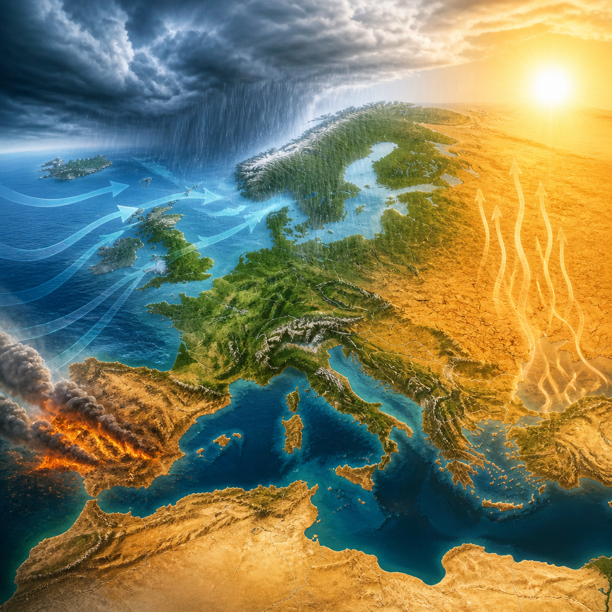
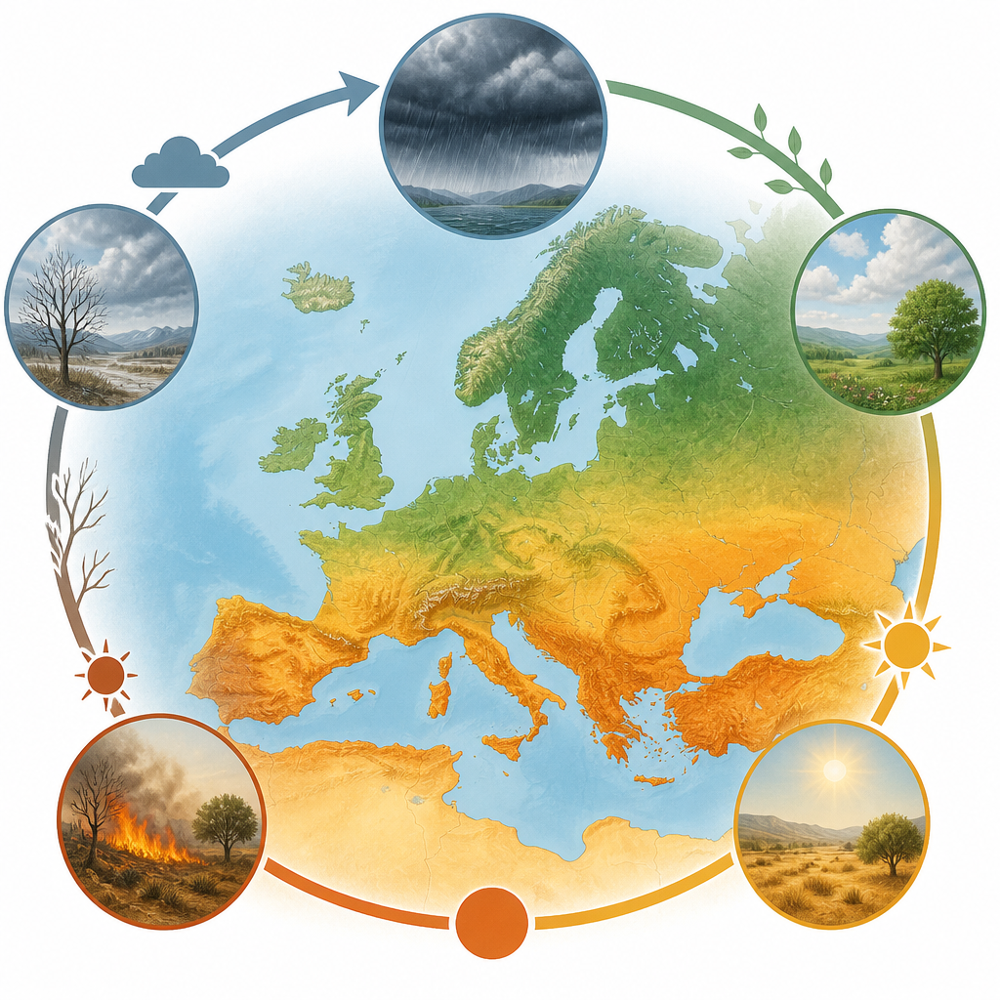

Uno studio ad alta risoluzione analizza come cinque estremi meteorologici si presentino da soli, in successione o nello stesso luogo e mese.
In Europa gli estremi climatici sono aumentati sia per frequenza sia per intensità a partire dal 1961. Non si tratta soltanto di ondate di calore, siccità o piogge estreme considerate separatamente: cresce anche la presenza di più pericoli meteorologici nelle stesse aree, nel corso dell’anno o persino nello stesso mese.
È quanto emerge da uno studio che coinvolge Jonathan Spinoni del CMCC e che esamina cinque tipi di estremi: ondate di calore, ondate di freddo, siccità meteorologiche, precipitazioni estreme e condizioni favorevoli agli incendi. La siccità meteorologica indica una carenza di precipitazioni; le condizioni favorevoli agli incendi sono invece situazioni meteorologiche che rendono più propensa la propagazione del fuoco.
La ricerca confronta due periodi, 1961–1990 e 1991–2020, usando HERA, un insieme di dati paneuropeo sviluppato dal Centro comune di ricerca della Commissione europea. La risoluzione è di circa un chilometro e mezzo: un dettaglio spaziale che permette di seguire come gli estremi varino da area ad area. L’analisi è svolta su scala mensile, così da individuare gli eventi che si verificano da soli, quelli che ricorrono nella stessa zona durante l’anno e quelli che coincidono nel tempo.
Fra i singoli pericoli analizzati, le ondate di calore mostrano l’aumento più esteso in Europa negli ultimi decenni. L’estate è la stagione più importante per questo cambiamento. Nella maggior parte del continente, nel periodo più recente gli episodi legati al caldo risultano oltre tre volte più frequenti rispetto al periodo precedente, soprattutto nei mesi estivi.
Gli altri estremi seguono andamenti più regionali. Le piogge estreme sono aumentate in particolare nell’Europa settentrionale e nel Regno Unito. Le siccità si sono intensificate nell’Europa centrale e meridionale. Nell’Europa sudoccidentale sono invece cresciute le condizioni favorevoli agli incendi, con una stagione del fuoco estesa dalla primavera all’autunno.
Gli estremi di freddo, nel complesso, sono diventati meno frequenti. Tuttavia, in alcuni mesi e in alcune regioni anche le ondate di freddo mostrano aumenti, con possibili conseguenze per l’agricoltura e per altri settori.

Il risultato centrale dello studio riguarda proprio le combinazioni. In oltre tre quarti dell’Europa, per la maggior parte dell’anno, è aumentata frequenza e intensità di almeno due pericoli. Spiccano soprattutto le combinazioni tra ondate di calore, siccità e precipitazioni estreme.
A seconda della stagione e della regione, emergono però anche altri incroci. In circa un decimo della superficie terrestre analizzata sono aumentate sia frequenza sia intensità di quattro pericoli diversi: ondate di calore, ondate di freddo, siccità e precipitazioni estreme. Questo accade soprattutto in primavera e in autunno.
Su ampie parti del continente sono diventate più comuni le associazioni fra caldo e siccità, fra caldo e piogge intense, oppure fra tutti e tre questi elementi. Considerare tali situazioni insieme è importante perché una combinazione di estremi può avere effetti molto maggiori della semplice somma dei singoli eventi.
Una novità del lavoro è l’attenzione agli estremi concomitanti, cioè agli eventi che avvengono nello stesso mese e nello stesso anno, nello stesso luogo. I ricercatori hanno stimato anche come sia cambiata nel tempo la popolazione esposta a queste condizioni.
Le ondate di calore associate alla siccità rappresentano la combinazione con la maggiore quota di popolazione cumulativamente esposta. In novembre, nel periodo 1991–2020, l’esposizione cumulativa a condizioni calde e secche è stata circa 2,7 volte quella del periodo 1961–1990: 360 milioni contro 130 milioni di persone. In agosto il rapporto raggiunge 4,7 volte, con 1,3 miliardi contro 363 milioni.
È aumentata nettamente anche l’esposizione congiunta a ondate di calore e precipitazioni estreme. In maggio, nel periodo più recente, la popolazione cumulativamente esposta è risultata 7,3 volte superiore: 440 milioni di persone rispetto a 65 milioni. Per le condizioni calde, secche e favorevoli agli incendi, gli incrementi più forti dell’esposizione si osservano in estate. In agosto, l’esposizione passa da circa 100 milioni a 450 milioni; per la combinazione di caldo, siccità, piogge intense e condizioni favorevoli agli incendi passa da 100 milioni a circa 670 milioni.
Lo studio mostra che in Europa non crescono soltanto i singoli estremi meteorologici. Crescono anche le loro combinazioni e le situazioni concomitanti. Per questo, secondo la ricerca, preparazione e strategie di adattamento dovrebbero considerare insieme caldo, siccità, piogge intense e rischio di incendi, senza affrontarli come fenomeni isolati.
Questo articolo l'hai letto sul blog di Meteo News Radar: un'app che ti mostra da dove vengono i numeri, invece di limitarsi a dartelo. E ogni mattina ne trovi uno nuovo come questo.